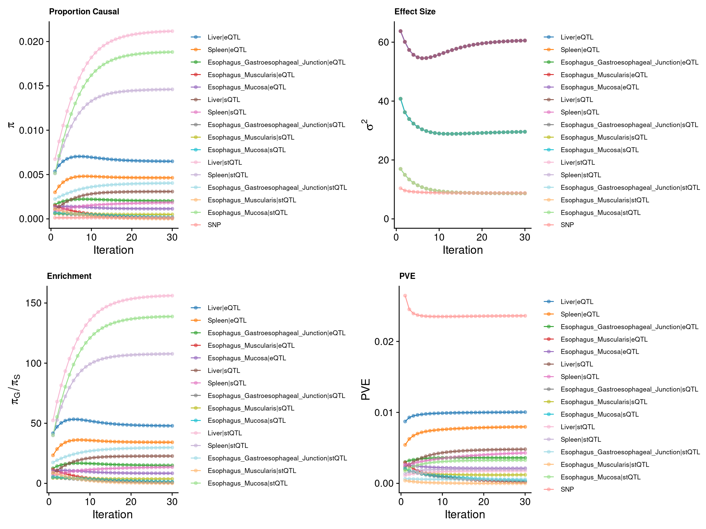
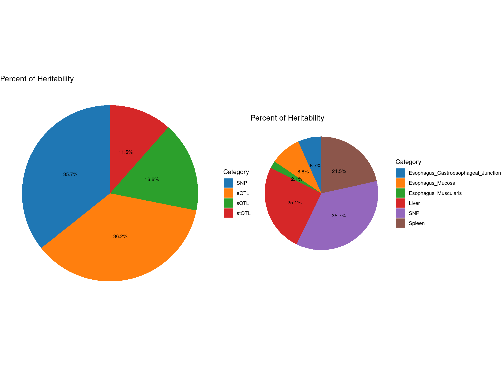
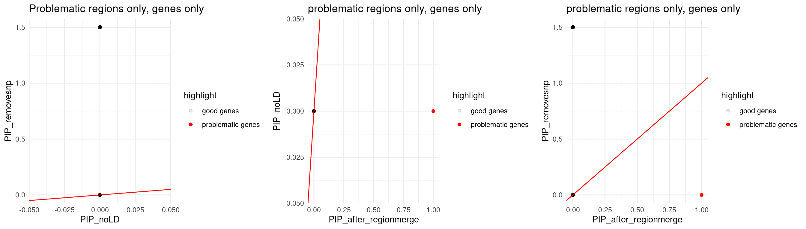
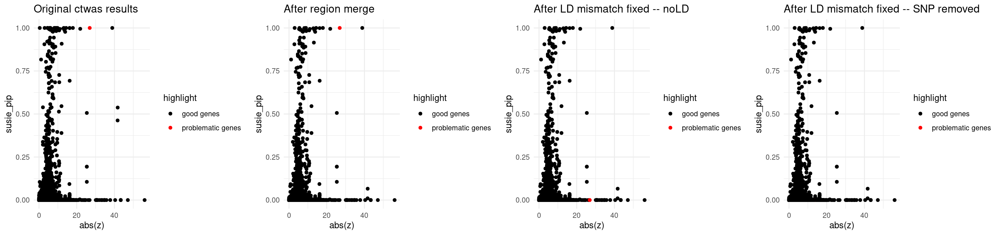
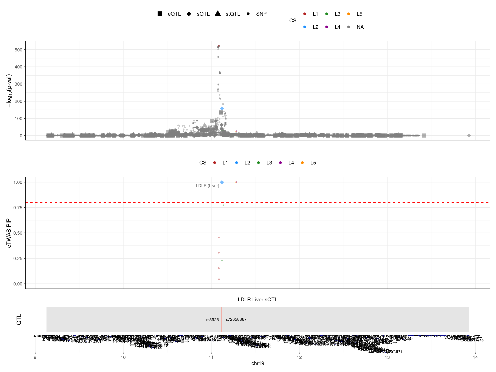
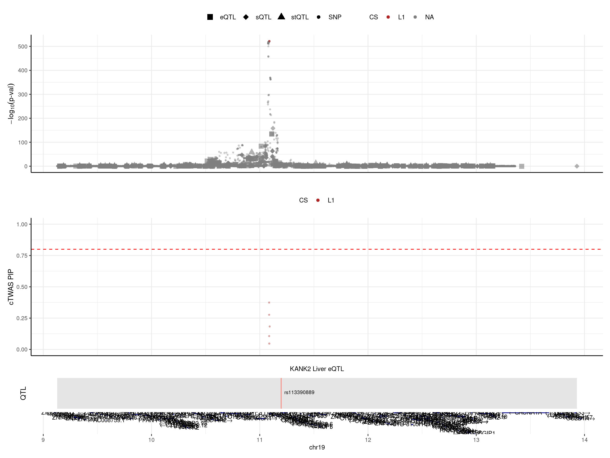
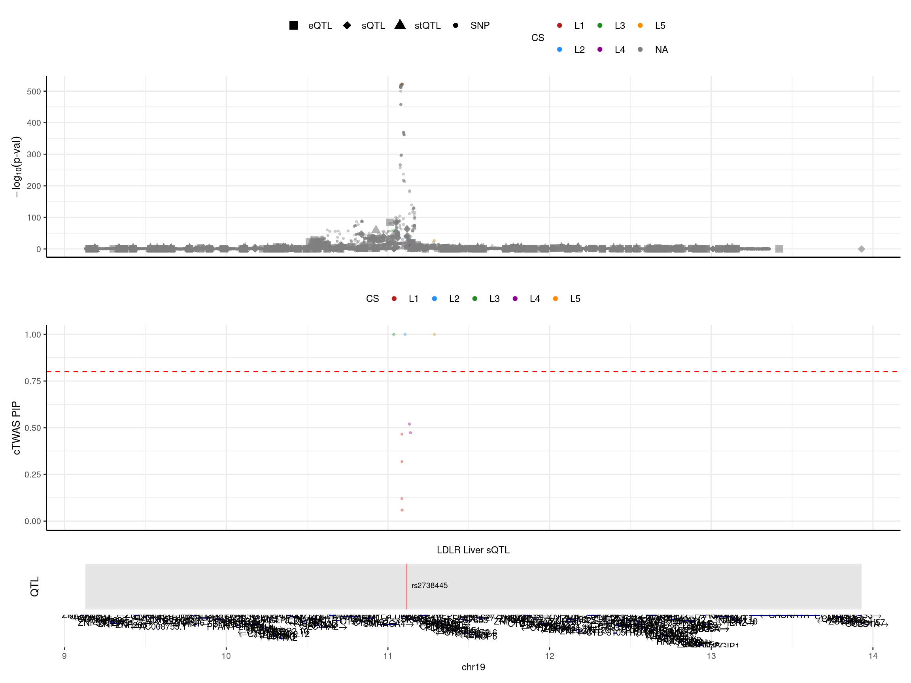
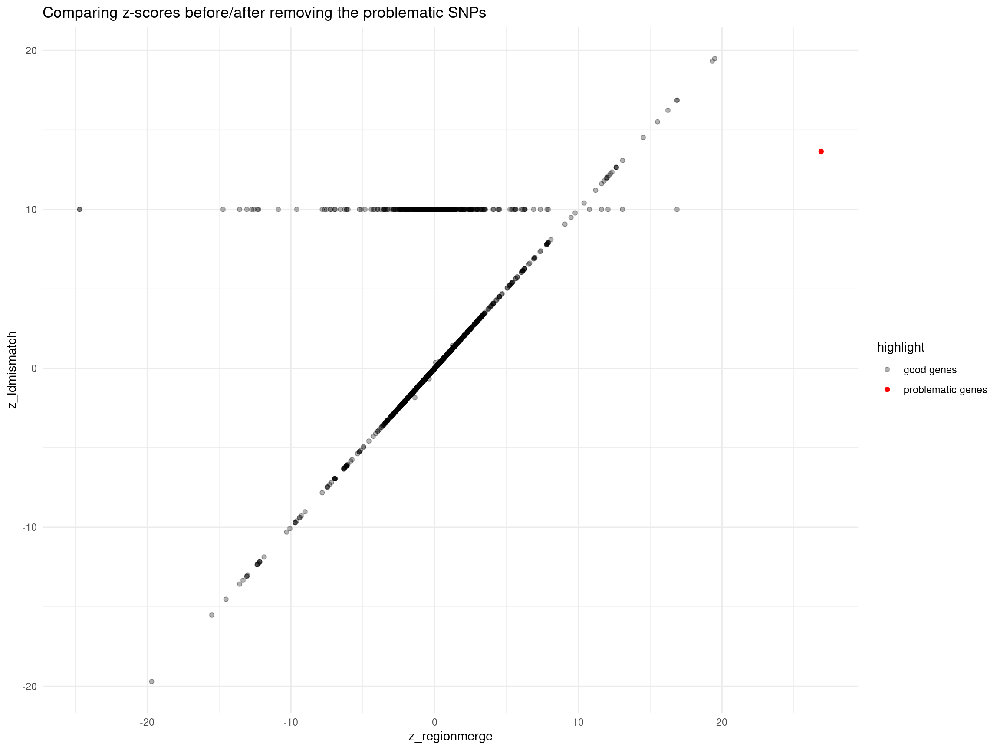

Last updated: 2024-12-20
Checks: 6 1
Knit directory: multigroup_ctwas_analysis/
This reproducible R Markdown analysis was created with workflowr (version 1.7.0). The Checks tab describes the reproducibility checks that were applied when the results were created. The Past versions tab lists the development history.
The R Markdown is untracked by Git. To know which version of the R
Markdown file created these results, you’ll want to first commit it to
the Git repo. If you’re still working on the analysis, you can ignore
this warning. When you’re finished, you can run
wflow_publish to commit the R Markdown file and build the
HTML.
Great job! The global environment was empty. Objects defined in the global environment can affect the analysis in your R Markdown file in unknown ways. For reproduciblity it’s best to always run the code in an empty environment.
The command set.seed(20231112) was run prior to running
the code in the R Markdown file. Setting a seed ensures that any results
that rely on randomness, e.g. subsampling or permutations, are
reproducible.
Great job! Recording the operating system, R version, and package versions is critical for reproducibility.
Nice! There were no cached chunks for this analysis, so you can be confident that you successfully produced the results during this run.
Great job! Using relative paths to the files within your workflowr project makes it easier to run your code on other machines.
Great! You are using Git for version control. Tracking code development and connecting the code version to the results is critical for reproducibility.
The results in this page were generated with repository version c435195. See the Past versions tab to see a history of the changes made to the R Markdown and HTML files.
Note that you need to be careful to ensure that all relevant files for
the analysis have been committed to Git prior to generating the results
(you can use wflow_publish or
wflow_git_commit). workflowr only checks the R Markdown
file, but you know if there are other scripts or data files that it
depends on. Below is the status of the Git repository when the results
were generated:
Ignored files:
Ignored: .Rhistory
Untracked files:
Untracked: analysis/LDL_newtissue_example.Rmd
Note that any generated files, e.g. HTML, png, CSS, etc., are not included in this status report because it is ok for generated content to have uncommitted changes.
There are no past versions. Publish this analysis with
wflow_publish() to start tracking its development.
Tissues are: “Liver”,“Spleen”,“Esophagus_Gastroesophageal_Junction”,“Esophagus_Muscularis”,“Esophagus_Mucosa”
library(ctwas)
library(EnsDb.Hsapiens.v86)
library(ggplot2)
library(gridExtra)
library(dplyr)
ens_db <- EnsDb.Hsapiens.v86
mapping_predictdb <- readRDS("/project2/xinhe/shared_data/multigroup_ctwas/weights/mapping_files/PredictDB_mapping.RDS")
mapping_munro <- readRDS("/project2/xinhe/shared_data/multigroup_ctwas/weights/mapping_files/Munro_mapping.RDS")
mapping_two <- rbind(mapping_predictdb,mapping_munro)
load("/project2/xinhe/shared_data/multigroup_ctwas/gwas/samplesize.rdata")
colors <- c( "#1f77b4", "#ff7f0e", "#2ca02c", "#d62728", "#9467bd", "#8c564b", "#e377c2", "#7f7f7f", "#bcbd22", "#17becf", "#f7b6d2", "#c5b0d5", "#9edae5", "#ffbb78", "#98df8a", "#ff9896" )
plot_piechart <- function(ctwas_parameters, colors, by) {
# Create the initial data frame
data <- data.frame(
category = names(ctwas_parameters$prop_heritability),
percentage = ctwas_parameters$prop_heritability
)
# Split the category into context and type
data <- data %>%
mutate(
context = sub("\\|.*", "", category),
type = sub(".*\\|", "", category)
)
# Aggregate the data based on the 'by' parameter
if (by == "type") {
data <- data %>%
group_by(type) %>%
summarize(percentage = sum(percentage)) %>%
mutate(category = type) # Use type as the new category
} else if (by == "context") {
data <- data %>%
group_by(context) %>%
summarize(percentage = sum(percentage)) %>%
mutate(category = context) # Use context as the new category
} else {
stop("Invalid 'by' parameter. Use 'type' or 'context'.")
}
# Calculate percentage labels for the chart
data$percentage_label <- paste0(round(data$percentage * 100, 1), "%")
# Create the pie chart
pie <- ggplot(data, aes(x = "", y = percentage, fill = category)) +
geom_bar(stat = "identity", width = 1) +
coord_polar("y", start = 0) +
theme_void() + # Remove background and axes
geom_text(aes(label = percentage_label),
position = position_stack(vjust = 0.5), size = 3) + # Adjust size as needed
scale_fill_manual(values = colors) + # Custom colors
labs(fill = "Category") + # Legend title
ggtitle("Percent of Heritability") # Title
return(pie)
}trait <- "LDL-ukb-d-30780_irnt"
results_dir_origin <- paste0("/project/xinhe/xsun/multi_group_ctwas/11.multi_group_1008/results-newtissues/",trait,"/")
ctwas_res_origin <- readRDS(paste0(results_dir_origin,trait,".ctwas.res.RDS"))
finemap_res_origin <- ctwas_res_origin$finemap_resgwas_n <- samplesize[trait]
tissue <- c("Liver","Spleen","Esophagus_Gastroesophageal_Junction","Esophagus_Muscularis","Esophagus_Mucosa")
param_origin <- ctwas_res_origin$param
make_convergence_plots(param_origin, gwas_n, colors = colors)
ctwas_parameters_origin <- summarize_param(param_origin, gwas_n)
pve_pie_by_type_origin <- plot_piechart(ctwas_parameters = ctwas_parameters_origin, colors = colors, by = "type")
pve_pie_by_context_origin <- plot_piechart(ctwas_parameters = ctwas_parameters_origin, colors = colors, by = "context")
gridExtra::grid.arrange(pve_pie_by_type_origin,pve_pie_by_context_origin, ncol = 2)
load(paste0("/project/xinhe/xsun/multi_group_ctwas/11.multi_group_1008/post_process_rm_ld-newtissues/rm_",trait,".rdata"))
finemap_res_rm <- res_regionmerge$finemap_res
finemap_res_rm_boundary_genes <- finemap_res_rm[finemap_res_rm$id %in%selected_boundary_genes$id,]
finemap_res_rm_boundary_genes_pip <- finemap_res_rm_boundary_genes[,c("id","susie_pip","cs")]
finemap_res_origin_boundary_genes <- finemap_res_origin[finemap_res_origin$id %in%selected_boundary_genes$id,]
finemap_res_origin_boundary_genes_pip <- finemap_res_origin_boundary_genes[,c("id","susie_pip","cs")]
finemap_res_compare_regionmerge <- merge(finemap_res_origin_boundary_genes_pip,finemap_res_rm_boundary_genes_pip, by = "id")
colnames(finemap_res_compare_regionmerge) <- c("id","susie_pip_origin","cs_origin","susie_pip_reginmerge","cs_reginmerge")
DT::datatable(finemap_res_compare_regionmerge,caption = htmltools::tags$caption( style = 'caption-side: left; text-align: left; color:black; font-size:150% ;','Selected boundary genes (susie_pip > 0.5)'),options = list(pageLength = 10) )file_pipthreshold02 <- paste0("/project/xinhe/xsun/multi_group_ctwas/11.multi_group_1008/post_process_rm_ld-newtissues/ldmismatch_diagnosis_pipthres02_nozfilter_", trait, ".rdata")
if (file.exists(file_pipthreshold02)) {
load(file_pipthreshold02)
pip_02 <- data.frame(
"PIP Threshold" = "0.2",
"Number of Selected Regions" = length(selected_region_ids),
"Number of Problematic Genes" = length(problematic_genes),
"Number of Problematic Regions" = length(problematic_region_ids),
"Number of Problematic SNPs" = length(res_ldmismatch$problematic_snps),
"Number of Flipped SNPs" = length(res_ldmismatch$flipped_snps)
)
}else{
load(paste0("/project/xinhe/xsun/multi_group_ctwas/11.multi_group_1008/post_process_rm_ld-newtissues/ldmismatch_diagnosis_pipthres02_", trait, ".rdata"))
pip_02 <- data.frame(
"PIP Threshold" = "0.2",
"Number of Selected Regions Number of Selected Regions" = length(selected_region_ids),
"Number of Problematic Genes" = 0,
"Number of Problematic Regions" = 0,
"Number of Problematic SNPs" = length(res_ldmismatch$problematic_snps),
"Number of Flipped SNPs" = length(res_ldmismatch$flipped_snps)
)
}
file_pipthreshold05 <- paste0("/project/xinhe/xsun/multi_group_ctwas/11.multi_group_1008/post_process_rm_ld-newtissues/ldmismatch_diagnosis_pipthres05_nozfilter_", trait, ".rdata")
if (file.exists(file_pipthreshold05)) {
load(file_pipthreshold05)
pip_05 <- data.frame(
"PIP Threshold" = "0.5",
"Number of Selected Regions" = length(selected_region_ids),
"Number of Problematic Genes" = length(problematic_genes),
"Number of Problematic Regions" = length(problematic_region_ids),
"Number of Problematic SNPs" = length(res_ldmismatch$problematic_snps),
"Number of Flipped SNPs" = length(res_ldmismatch$flipped_snps)
)
}else{
load(paste0("/project/xinhe/xsun/multi_group_ctwas/11.multi_group_1008/post_process_rm_ld-newtissues/ldmismatch_diagnosis_pipthres05_", trait, ".rdata"))
pip_05 <- data.frame(
"PIP Threshold" = "0.5",
"Number of Selected Regions" = length(selected_region_ids),
"Number of Problematic Genes" = 0,
"Number of Problematic Regions" = 0,
"Number of Problematic SNPs" = length(res_ldmismatch$problematic_snps),
"Number of Flipped SNPs" = length(res_ldmismatch$flipped_snps)
)
}
results_table <- rbind(pip_02, pip_05)
DT::datatable(results_table,caption = htmltools::tags$caption( style = 'caption-side: left; text-align: left; color:black; font-size:150% ;','LD mismatch diagnosis table for different gene cutoff'),options = list(pageLength = 10) )file_ldmismatch_results <- paste0("/project/xinhe/xsun/multi_group_ctwas/11.multi_group_1008/post_process_rm_ld-newtissues/ldmismatch_pipthres02_nold_nozfilter_",trait,".rdata")
if(file.exists(file_ldmismatch_results)) {
load(file_pipthreshold02)
load(file_ldmismatch_results)
finemap_res_ldmm_nold <- res_ldmm_nold$finemap_res
load(paste0("/project/xinhe/xsun/multi_group_ctwas/11.multi_group_1008/post_process_rm_ld-newtissues/ldmismatch_pipthres02_removesnp_nozfilter_",trait,".rdata"))
finemap_res_ldmm_removesnp <- res_ldmm_removesnp$finemap_res
finemap_res_ldmm_nold_problematic_gene <- finemap_res_ldmm_nold[finemap_res_ldmm_nold$region_id %in% problematic_region_ids & finemap_res_ldmm_nold$type != "SNP",]
finemap_res_ldmm_removesnp_problematic_gene <- finemap_res_ldmm_removesnp[finemap_res_ldmm_removesnp$region_id %in% problematic_region_ids & finemap_res_ldmm_removesnp$type != "SNP",]
merge_2method <- merge(finemap_res_ldmm_nold_problematic_gene,finemap_res_ldmm_removesnp_problematic_gene, by ="id",all.x=T)
merge_2method$highlight <- ifelse(merge_2method$id %in% problematic_genes, "problematic genes", "good genes")
merge_2method$susie_pip.y[is.na(merge_2method$susie_pip.y)] <- 1.5
p1 <- ggplot(data = merge_2method, aes(x = susie_pip.x, y = susie_pip.y, color = highlight, alpha = highlight)) +
geom_point() +
scale_color_manual(values = c("problematic genes" = "red", "good genes" = "black")) +
scale_alpha_manual(values = c("problematic genes" = 1, "good genes" = 0.1)) +
labs(x = "PIP_noLD", y = "PIP_removesnp") +
geom_abline(slope = 1, intercept = 0, col = "red") +
ggtitle("Problematic regions only, genes only") +
theme_minimal()
finemap_res_rm_problematic_gene <- finemap_res_rm[finemap_res_rm$region_id %in% problematic_region_ids & finemap_res_rm$type != "SNP",]
merge_rm_ldmm_nold <- merge(finemap_res_rm_problematic_gene,finemap_res_ldmm_nold_problematic_gene, by ="id",all.x=T)
merge_rm_ldmm_nold$highlight <- ifelse(merge_rm_ldmm_nold$id %in% problematic_genes, "problematic genes", "good genes")
merge_rm_ldmm_nold$susie_pip.y[is.na(merge_rm_ldmm_nold$susie_pip.y)] <- 1.5
p2 <- ggplot(data = merge_rm_ldmm_nold, aes(x= susie_pip.x, y= susie_pip.y, color = highlight, alpha = highlight)) +
geom_point() +
labs(x="PIP_after_regionmerge", y="PIP_noLD") +
scale_color_manual(values = c("problematic genes" = "red", "good genes" = "black")) +
scale_alpha_manual(values = c("problematic genes" = 1, "good genes" = 0.1)) +
geom_abline(slope = 1, intercept = 0, col ="red") +
ggtitle("problematic regions only, genes only") +
theme_minimal()
merge_rm_ldmm_removesnp <- merge(finemap_res_rm_problematic_gene,finemap_res_ldmm_removesnp_problematic_gene, by ="id",all.x =T)
merge_rm_ldmm_removesnp$highlight <- ifelse(merge_rm_ldmm_removesnp$id %in% problematic_genes, "problematic genes", "good genes")
merge_rm_ldmm_removesnp$susie_pip.y[is.na(merge_rm_ldmm_removesnp$susie_pip.y)] <- 1.5
p3 <- ggplot(data = merge_rm_ldmm_removesnp, aes(x= susie_pip.x, y= susie_pip.y, color = highlight, alpha = highlight)) +
geom_point() +
labs(x="PIP_after_regionmerge", y="PIP_removesnp") +
scale_alpha_manual(values = c("problematic genes" = 1, "good genes" = 0.1)) +
scale_color_manual(values = c("problematic genes" = "red", "good genes" = "black")) +
geom_abline(slope = 1, intercept = 0, col ="red") +
ggtitle("problematic regions only, genes only") +
theme_minimal()
print(sprintf("Total number of molecular traits in problematic regions = %s",nrow(merge_rm_ldmm_removesnp)))
print(sprintf("Number of molecular traits disappeared after removing prblematic SNPs = %s", sum(merge_rm_ldmm_removesnp$susie_pip.y == 1.5)))
print("The dots showing PIP =1.5 means: these genes were removed since the only QTLs of them are problematic")
print("Notes: 2 intron overlapped")
grid.arrange(p1,p2,p3, ncol = 3)
}else{
print("There's no problematic genes, no need to compare")
}[1] "Total number of molecular traits in problematic regions = 1630"
[1] "Number of molecular traits disappeared after removing prblematic SNPs = 375"
[1] "The dots showing PIP =1.5 means: these genes were removed since the only QTLs of them are problematic"
[1] "Notes: 2 intron overlapped"
if(file.exists(file_ldmismatch_results)){
finemap_res_origin <- ctwas_res_origin$finemap_res
finemap_res_origin_gene <- finemap_res_origin[finemap_res_origin$type != "SNP",]
finemap_res_origin_gene$highlight <- ifelse(finemap_res_origin_gene$id %in% problematic_genes, "problematic genes", "good genes")
p1 <- ggplot(data = finemap_res_origin_gene, aes(x= abs(z), y= susie_pip, color = highlight)) +
geom_point() +
scale_color_manual(values = c("problematic genes" = "red", "good genes" = "black")) +
ggtitle("Original ctwas results") +
theme_minimal()
finemap_res_rm_gene <- finemap_res_rm[finemap_res_rm$type != "SNP",]
finemap_res_rm_gene$highlight <- ifelse(finemap_res_rm_gene$id %in% problematic_genes, "problematic genes", "good genes")
p2 <- ggplot(data = finemap_res_rm_gene, aes(x= abs(z), y= susie_pip, color = highlight)) +
geom_point() +
scale_color_manual(values = c("problematic genes" = "red", "good genes" = "black")) +
ggtitle("After region merge") +
theme_minimal()
finemap_res_ldmm_nold_gene <- finemap_res_ldmm_nold[finemap_res_ldmm_nold$type !="SNP",]
finemap_res_ldmm_nold_gene$highlight <- ifelse(finemap_res_ldmm_nold_gene$id %in% problematic_genes, "problematic genes", "good genes")
p3 <- ggplot(data = finemap_res_ldmm_nold_gene, aes(x= abs(z), y= susie_pip, color = highlight)) +
geom_point() +
scale_color_manual(values = c("problematic genes" = "red", "good genes" = "black")) +
ggtitle("After LD mismatch fixed -- noLD") +
theme_minimal()
finemap_res_ldmm_removesnp_gene <- finemap_res_ldmm_removesnp[finemap_res_ldmm_removesnp$type !="SNP",]
finemap_res_ldmm_removesnp_gene$highlight <- ifelse(finemap_res_ldmm_removesnp_gene$id %in% problematic_genes, "problematic genes", "good genes")
p4 <- ggplot(data = finemap_res_ldmm_removesnp_gene, aes(x= abs(z), y= susie_pip, color = highlight)) +
geom_point() +
scale_color_manual(values = c("problematic genes" = "red", "good genes" = "black")) +
ggtitle("After LD mismatch fixed -- SNP removed") +
theme_minimal()
grid.arrange(p1,p2,p3,p4, ncol = 4)
print("L - estimated in region merge step")
print(updated_data_res_regionmerge$updated_region_L[problematic_region_ids])
load(paste0("/project/xinhe/xsun/multi_group_ctwas/11.multi_group_1008/post_process_rm_ld-newtissues/ldmismatch_pipthres02_removesnp_rescreenregion_nozfilter_",trait,".rdata"))
print("L - re-estimated after updating z_scores, region data")
print(screen_res$screened_region_L)
}else{
print("There's no problematic genes")
finemap_res_origin <- ctwas_res_origin$finemap_res
finemap_res_origin_gene <- finemap_res_origin[finemap_res_origin$type != "SNP",]
p1 <- ggplot(data = finemap_res_origin_gene, aes(x= abs(z), y= susie_pip)) +
geom_point() +
ggtitle("Original ctwas results") +
theme_minimal()
finemap_res_rm_gene <- finemap_res_rm[finemap_res_rm$type != "SNP",]
p2 <- ggplot(data = finemap_res_rm_gene, aes(x= abs(z), y= susie_pip)) +
geom_point() +
ggtitle("After region merge") +
theme_minimal()
grid.arrange(p1,p2, ncol = 2)
}
[1] "L - estimated in region merge step"
19_9127717_13360313
5
[1] "L - re-estimated after updating z_scores, region data"
19_9127717_13360313
5 weights_origin <- readRDS(paste0("/project/xinhe/xsun/multi_group_ctwas/11.multi_group_1008/results/",trait,"/",trait,".preprocessed.weights.RDS"))
load(paste0("/project/xinhe/xsun/multi_group_ctwas/11.multi_group_1008/post_process_rm_ld-newtissues/ldmismatch_pipthres02_removesnp_weights_updated_nozfilter_",trait,".rdata"))
region_id <- "19_9127717_13360313"
finemap_res_rm <- anno_finemap_res(finemap_res_rm,
snp_map = updated_data_res_regionmerge[["updated_snp_map"]],
mapping_table = mapping_two,
add_gene_annot = TRUE,
map_by = "molecular_id",
drop_unmapped = TRUE,
add_position = TRUE,
use_gene_pos = "mid")2024-12-20 17:43:11 INFO::Annotating fine-mapping result ...
2024-12-20 17:43:11 INFO::Map molecular traits to genes
2024-12-20 17:43:12 INFO::Split PIPs for molecular traits mapped to multiple genes
2024-12-20 17:43:19 INFO::Add gene positions
2024-12-20 17:43:22 INFO::Add SNP positionsfinemap_res_ldmm_nold <- anno_finemap_res(finemap_res_ldmm_nold,
snp_map = updated_data_res_regionmerge[["updated_snp_map"]],
mapping_table = mapping_two,
add_gene_annot = TRUE,
map_by = "molecular_id",
drop_unmapped = TRUE,
add_position = TRUE,
use_gene_pos = "mid")2024-12-20 17:43:40 INFO::Annotating fine-mapping result ...
2024-12-20 17:43:40 INFO::Map molecular traits to genes
2024-12-20 17:43:41 INFO::Split PIPs for molecular traits mapped to multiple genes
2024-12-20 17:43:48 INFO::Add gene positions
2024-12-20 17:43:48 INFO::Add SNP positionsfinemap_res_ldmm_removesnp <- anno_finemap_res(finemap_res_ldmm_removesnp,
snp_map = updated_data_res_regionmerge[["updated_snp_map"]],
mapping_table = mapping_two,
add_gene_annot = TRUE,
map_by = "molecular_id",
drop_unmapped = TRUE,
add_position = TRUE,
use_gene_pos = "mid")2024-12-20 17:43:53 INFO::Annotating fine-mapping result ...
2024-12-20 17:43:53 INFO::Map molecular traits to genes
2024-12-20 17:43:53 INFO::Split PIPs for molecular traits mapped to multiple genes
2024-12-20 17:44:00 INFO::Add gene positions
2024-12-20 17:44:00 INFO::Add SNP positionsfinemap_res_rm_gene <- finemap_res_rm[finemap_res_rm$type != "SNP",]
finemap_res_ldmm_removesnp_gene <- finemap_res_ldmm_removesnp[finemap_res_ldmm_removesnp$type !="SNP",]
print("locus plot -- after region merge")[1] "locus plot -- after region merge"make_locusplot(finemap_res_rm,
region_id = region_id,
ens_db = ens_db,
weights = weights_origin,
highlight_pip = 0.8,
filter_protein_coding_genes = TRUE,
filter_cs = TRUE,
color_pval_by = "cs",
color_pip_by = "cs",panel.heights = c(4,4,1,1))2024-12-20 17:44:09 INFO::Limit to protein coding genes
2024-12-20 17:44:09 INFO::focal id: intron_19_11120522_11123174|Liver_sQTL
2024-12-20 17:44:09 INFO::focal molecular trait: LDLR Liver sQTL
2024-12-20 17:44:09 INFO::Range of locus: chr19:9127860-13930432
2024-12-20 17:44:09 INFO::focal molecular trait QTL positions: 11120205,11120527
2024-12-20 17:44:09 INFO::Limit PIPs to credible sets
print("locus plot -- LD mismatch: no LD")[1] "locus plot -- LD mismatch: no LD"make_locusplot(finemap_res_ldmm_nold,
region_id = region_id,
ens_db = ens_db,
weights = weights_origin,
highlight_pip = 0.8,
filter_protein_coding_genes = TRUE,
filter_cs = TRUE,
color_pval_by = "cs",
color_pip_by = "cs",panel.heights = c(4,4,1,1))2024-12-20 17:44:14 INFO::Limit to protein coding genes
2024-12-20 17:44:14 INFO::focal id: ENSG00000197256.10|Liver_eQTL
2024-12-20 17:44:14 INFO::focal molecular trait: KANK2 Liver eQTL
2024-12-20 17:44:14 INFO::Range of locus: chr19:9127860-13930432
2024-12-20 17:44:14 INFO::focal molecular trait QTL positions: 11197621
2024-12-20 17:44:14 INFO::Limit PIPs to credible sets
print("locus plot -- LD mismatch: snp removed")[1] "locus plot -- LD mismatch: snp removed"make_locusplot(finemap_res_ldmm_removesnp,
region_id = region_id,
ens_db = ens_db,
weights = weights_updated,
highlight_pip = 0.8,
filter_protein_coding_genes = TRUE,
filter_cs = TRUE,
color_pval_by = "cs",
color_pip_by = "cs",panel.heights = c(4,4,1,1))2024-12-20 17:44:19 INFO::Limit to protein coding genes
2024-12-20 17:44:19 INFO::focal id: intron_19_11116212_11120092|Liver_sQTL
2024-12-20 17:44:19 INFO::focal molecular trait: LDLR Liver sQTL
2024-12-20 17:44:19 INFO::Range of locus: chr19:9127860-13930432
2024-12-20 17:44:19 INFO::focal molecular trait QTL positions: 11116394
2024-12-20 17:44:19 INFO::Limit PIPs to credible sets
finemap_res_rm_gene_region <- finemap_res_rm_gene[finemap_res_rm_gene$region_id == region_id,]
finemap_res_ldmm_removesnp_gene_region <- finemap_res_ldmm_removesnp_gene[finemap_res_ldmm_removesnp_gene$region_id == region_id,]
merged_region_gene <- merge(finemap_res_rm_gene_region,finemap_res_ldmm_removesnp_gene_region,by = "id",all.x=T)
merged_region_gene <- merged_region_gene[,c("id","gene_name.x","z.x","susie_pip.x","cs.x","z.y","susie_pip.y","cs.y")]
colnames(merged_region_gene) <- c("id","gene_name","z_regionmerge","susie_pip_regionmerge","cs_regionmerge","z_ldmismatch","susie_pip_ldmismatch","cs_ldmismatch")
merged_region_gene$highlight <- ifelse(merged_region_gene$id %in% problematic_genes, "problematic genes", "good genes")
merged_region_gene$z_ldmismatch[is.na(merged_region_gene$z_ldmismatch)] <- 10
print("The dots showing z_ldmismatch =10 means: these genes were removed since the only QTLs of them are problematic")[1] "The dots showing z_ldmismatch =10 means: these genes were removed since the only QTLs of them are problematic"ggplot(data = merged_region_gene, aes(x= z_regionmerge, y= z_ldmismatch, color = highlight, alpha = highlight)) +
geom_point() +
scale_color_manual(values = c("problematic genes" = "red", "good genes" = "black")) +
scale_alpha_manual(values = c("problematic genes" = 1, "good genes" = 0.3)) +
ggtitle("Comparing z-scores before/after removing the problematic SNPs") +
theme_minimal()
DT::datatable(merged_region_gene[merged_region_gene$z_ldmismatch != merged_region_gene$z_regionmerge,],caption = htmltools::tags$caption( style = 'caption-side: left; text-align: left; color:black; font-size:150% ;','Genes with different z before / after removing the problematic SNPs'),options = list(pageLength = 10) )
sessionInfo()R version 4.2.0 (2022-04-22)
Platform: x86_64-pc-linux-gnu (64-bit)
Running under: CentOS Linux 7 (Core)
Matrix products: default
BLAS/LAPACK: /software/openblas-0.3.13-el7-x86_64/lib/libopenblas_haswellp-r0.3.13.so
locale:
[1] C
attached base packages:
[1] stats4 stats graphics grDevices utils datasets methods
[8] base
other attached packages:
[1] dplyr_1.1.4 gridExtra_2.3
[3] ggplot2_3.5.1 EnsDb.Hsapiens.v86_2.99.0
[5] ensembldb_2.20.2 AnnotationFilter_1.20.0
[7] GenomicFeatures_1.48.3 AnnotationDbi_1.58.0
[9] Biobase_2.56.0 GenomicRanges_1.48.0
[11] GenomeInfoDb_1.39.9 IRanges_2.30.0
[13] S4Vectors_0.34.0 BiocGenerics_0.42.0
[15] ctwas_0.4.20.9001
loaded via a namespace (and not attached):
[1] colorspace_2.0-3 rjson_0.2.21
[3] ellipsis_0.3.2 rprojroot_2.0.3
[5] XVector_0.36.0 locuszoomr_0.2.1
[7] fs_1.5.2 rstudioapi_0.13
[9] farver_2.1.0 DT_0.22
[11] ggrepel_0.9.1 bit64_4.0.5
[13] fansi_1.0.3 xml2_1.3.3
[15] codetools_0.2-18 logging_0.10-108
[17] cachem_1.0.6 knitr_1.39
[19] jsonlite_1.8.0 workflowr_1.7.0
[21] Rsamtools_2.12.0 dbplyr_2.1.1
[23] png_0.1-7 readr_2.1.2
[25] compiler_4.2.0 httr_1.4.3
[27] assertthat_0.2.1 Matrix_1.5-3
[29] fastmap_1.1.0 lazyeval_0.2.2
[31] cli_3.6.1 later_1.3.0
[33] htmltools_0.5.2 prettyunits_1.1.1
[35] tools_4.2.0 gtable_0.3.0
[37] glue_1.6.2 GenomeInfoDbData_1.2.8
[39] rappdirs_0.3.3 Rcpp_1.0.12
[41] jquerylib_0.1.4 vctrs_0.6.5
[43] Biostrings_2.64.0 rtracklayer_1.56.0
[45] crosstalk_1.2.0 xfun_0.41
[47] stringr_1.5.1 lifecycle_1.0.4
[49] irlba_2.3.5 restfulr_0.0.14
[51] XML_3.99-0.14 zlibbioc_1.42.0
[53] zoo_1.8-10 scales_1.3.0
[55] gggrid_0.2-0 hms_1.1.1
[57] promises_1.2.0.1 MatrixGenerics_1.8.0
[59] ProtGenerics_1.28.0 parallel_4.2.0
[61] SummarizedExperiment_1.26.1 LDlinkR_1.2.3
[63] yaml_2.3.5 curl_4.3.2
[65] memoise_2.0.1 sass_0.4.1
[67] biomaRt_2.54.1 stringi_1.7.6
[69] RSQLite_2.3.1 highr_0.9
[71] BiocIO_1.6.0 filelock_1.0.2
[73] BiocParallel_1.30.3 rlang_1.1.2
[75] pkgconfig_2.0.3 matrixStats_0.62.0
[77] bitops_1.0-7 evaluate_0.15
[79] lattice_0.20-45 purrr_1.0.2
[81] labeling_0.4.2 GenomicAlignments_1.32.0
[83] htmlwidgets_1.5.4 cowplot_1.1.1
[85] bit_4.0.4 tidyselect_1.2.0
[87] magrittr_2.0.3 R6_2.5.1
[89] generics_0.1.2 DelayedArray_0.22.0
[91] DBI_1.2.2 withr_2.5.0
[93] pgenlibr_0.3.3 pillar_1.9.0
[95] KEGGREST_1.36.3 RCurl_1.98-1.7
[97] mixsqp_0.3-43 tibble_3.2.1
[99] crayon_1.5.1 utf8_1.2.2
[101] BiocFileCache_2.4.0 plotly_4.10.0
[103] tzdb_0.4.0 rmarkdown_2.25
[105] progress_1.2.2 grid_4.2.0
[107] data.table_1.14.2 blob_1.2.3
[109] git2r_0.30.1 digest_0.6.29
[111] tidyr_1.3.0 httpuv_1.6.5
[113] munsell_0.5.0 viridisLite_0.4.0
[115] bslib_0.3.1